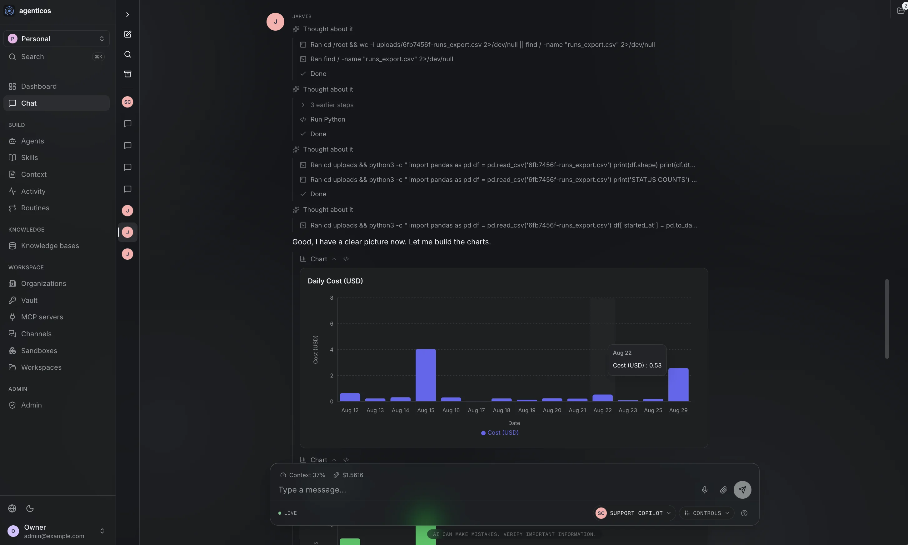
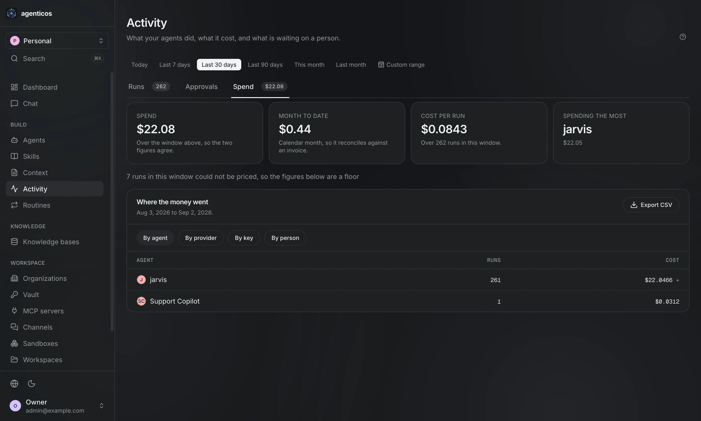

AgenticOS
One place to build, run and govern your company’s AI agents.
agenticos.acme.internal/agents/jarvis
agenticos.acme.internal/chat
agenticos.acme.internal/activity



No more caramba.
github.com/vstorm-co/agenticos